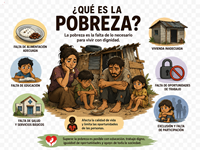
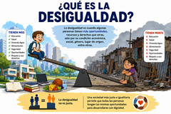
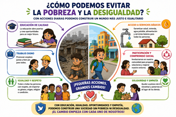

La pobreza es una condición socioeconómica que se caracteriza por la falta o escasez de recursos. Quienes la padecen no pueden satisfacer sus necesidades básicas, como la alimentación, la vivienda, la asistencia sanitaria o la educación formal, o bien alcanzan un grado mínimo de satisfacción de dichas necesidades.
Tipos de pobreza
Pobreza: Es la situación que padecen tanto quienes se ven imposibilitados de satisfacer sus necesidades básicas de consumo de alimentos, vivienda y servicios básicos fundamentales, como quienes tienen unos recursos mínimos que les garantizan la alimentación y algunos gastos, pero no les alcanzan para cubrir la canasta básica.
Pobreza extrema o indigencia: Es la situación más crítica dentro de la pobreza. Implica que las personas no solo no pueden acceder a la canasta básica de alimentos, sino que ni siquiera pueden consumir una cantidad básica de calorías diarias que les garantice un nivel de vida saludable. Además, no tienen acceso a servicios como la salud, la higiene o la educación.

La desigualdad ocurre cuando dos o más cosas o situaciones no son iguales, esto es, que no son equivalentes, ni justas, ni se corresponden. Esto puede referirse a cosas muy distintas, dependiendo del contexto.
Por ejemplo: en el campo de las matemáticas, se llama desigualdad a una relación de orden entre dos valores que no son iguales ni equivalentes, o sea, cuando no existe entre ellos una igualdad.
Tipos de desigualdad
Desigualdad social:La desigualdad social es una categoría muy amplia, en la que se toman en consideración los diferentes aspectos de la vida de las personas y el modo en que éstos influyen en las oportunidades que tienen, el lugar que ocupan en la sociedad o la calidad de vida que les aguarda.
Desigualdad económica:La desigualdad económica o desigualdad de ingresos se puede entender como un aspecto apenas de la desigualdad social, referido exclusivamente a lo monetario y económico.
Desigualdad educativa:La desigualdad educativa tiene que ver con el reparto poco equitativo del acceso a la educación, ya sea a nivel global, o en un país determinado.
Desigualdad legal:La desigualdad legal o desigualdad jurídica se refiere a la diferencia significativa de trato por parte del Estado y de los organismos de la ley que se da a los ciudadanos dependiendo de su posición socioeconómica, su grupo étnico, su género, religión o su orientación sexual, por ejemplo.
Desigualdad de género:La desigualdad de género es una forma de desigualdad social, que tiene que ver con la discriminación por motivos del sexo o de la orientación sexual.

El hambre es a la vez causa y consecuencia de la pobreza. Esta es la razón por la que la erradicación del hambre encabeza nuestro ranking de formas de luchar contra la pobreza.
Los 1000 primeros días de vida son cruciales para cualquier ser humano. Durante esta etapa es cuando se produce el desarrollo básico de los niños y niñas y una buena nutrición juega un papel esencial. El hambre y la desnutrición en la infancia son causa de mortalidad infantil, pero también puede provocar una ralentización de su desarrollo físico e intelectual, consecuencias irreversibles que les acompañarán toda su vida.
Combatir la desigualdad requiere de un enfoque multifacético. En este sentido, se presenta una estrategia basada en cinco propuestas relacionadas entre sí para abordar este complejo escenario:
1.-Invertir en educación y garantizar su acceso al conjunto de la población.
2.-Impulsar políticas fiscales progresivas, así como evitar la evasión fiscal.
3.-Fomentar la participación e incluso la movilización ciudadana para exigir a las autoridades transparencia y responsabilidad en su gestión administrativa.
4.-Brindar redes de asistencia social que eviten la pauperización de aquellas personas en situación de vulnerabilidad por razones sociales (desempleo) o de discriminación.
5.-Promover la igualdad de género mediante políticas que aseguren el acceso a oportunidades laborales y la eliminación de la brecha salarial. Asimismo, resulta fundamental articular programas educativos que incentiven la supresión de estereotipos y prácticas abusivas que limiten el potencial de las mujeres en la sociedad.